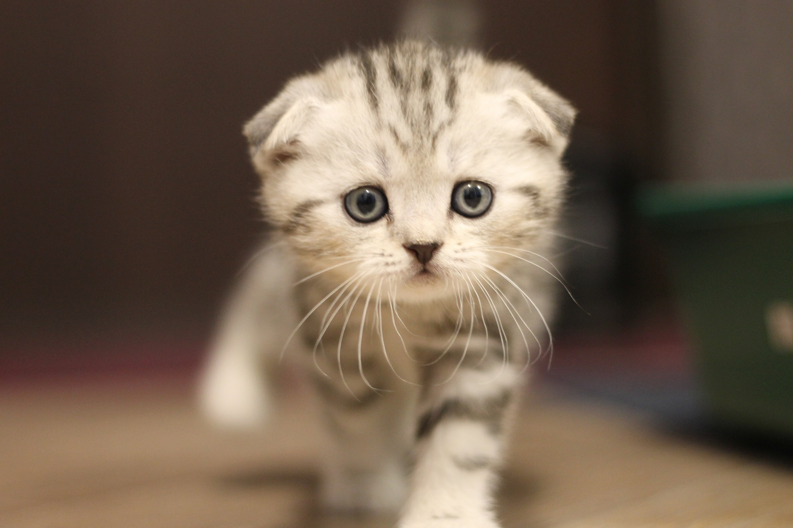
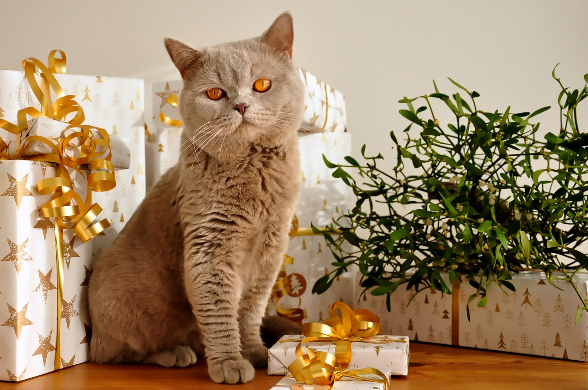
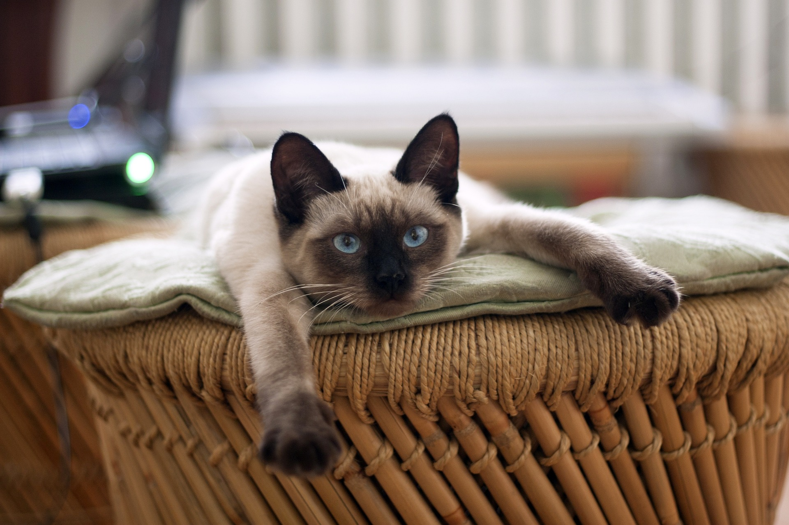
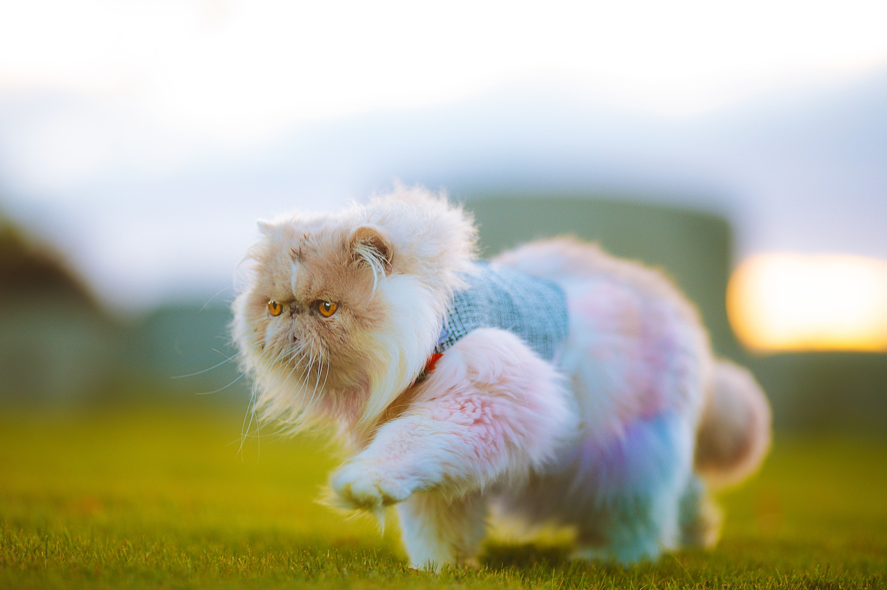
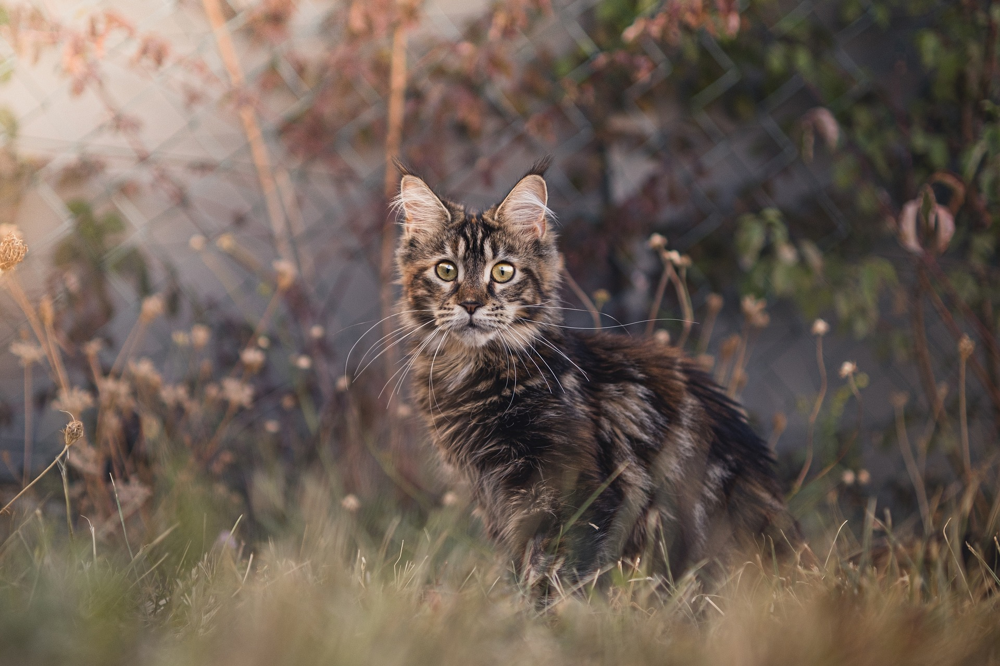
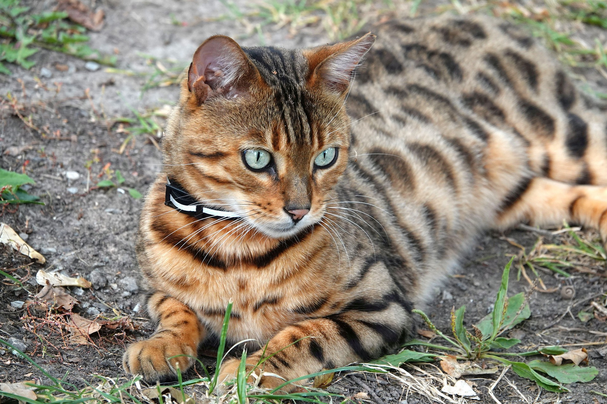
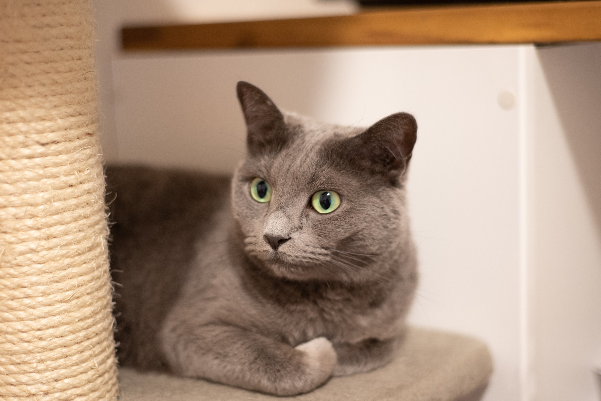
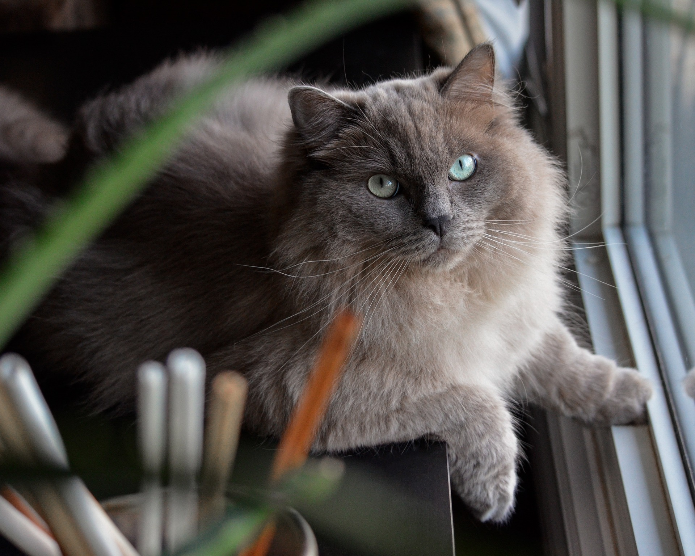
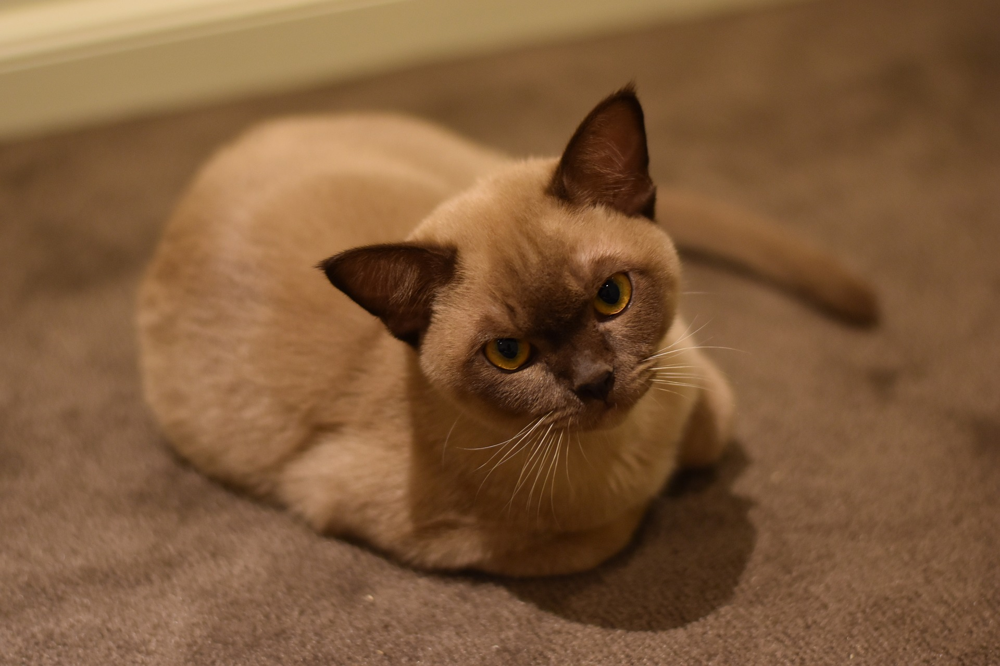

Despre rasele pisici
Exista peste 70 de rase de pisici, fiecare cu propriile caracteristici si personalități. Unele rase sunt cunoscute pentru blana lor lunga si mătăsoasă, in timp ce altele sunt cunoscute pentru urechile lor mari si pliate. Fiecare rasa are propriile nevoi si cerințe, așa ca este important sa fii informat înainte de a adopta o pisică.
Informații interesante despre rase de pisici

Scottish Fold
- Urechile pilate: Această trăsătură distinctivă apare din cauza unei mutații genetice care afectează cartilajul. Deși nu toate Scottish Fold au urechi pliate, cele care le au sunt extrem de apreciate.
- Personalitate: Sunt afectuoase, prietenoase și se adaptează foarte bine la familii sau alte animale de companie.
- Postura "de bufniță": Sunt cunoscute pentru obiceiul de a sta pe labele din spate, ceea ce le dă un aspect drăguț și amuzant.

British Shorthair
- Rădăcini romane: Se crede că au fost aduse în Marea Britanie de romani, pentru a proteja grânarele de rozătoare.
- Aspectul de "ursuleț": Au o față rotundă, ochi mari și blană densă, conferindu-le un aspect de „pisică jucărie”.
- Comportament: Sunt calme, inteligente și nu cer prea multă atenție, fiind o alegere ideală pentru cei care preferă o pisică independentă, dar iubitoare.

Siameza
- Personalitate: Sunt foarte inteligente, curioase și sociabile, fiind cunoscute pentru abilitatea de a comunică, cu stăpânii lor.
- Blana: Au blană scurtă, dar densă, care necesită puțină îngrijire.
- Temperament: Sunt foarte afectuoase și iubitoare, dar pot fi și destul de vocale, așa că nu sunt potrivite pentru toată lumea.

Persana
- Blana lungă: Au blană lungă, mătăsoasă și densă, care necesită o îngrijire regulată.
- Personalitate: Sunt liniștite, afectuoase și iubitoare, dar pot fi destul de timide și rezervate.
- Temperament: Sunt pisici de interior, care preferă să stea în casă și să se joace în siguranță.

Maine Coon
- Cea mai mare rasă domestică: Pot ajunge până la 10-12 kg, uneori și mai mult.
- Blană rezistentă la apă: Blana lor dublă și rezistentă la apă îi ajută să reziste bine în condiții de frig.
- Personalitate de "gentle giant": Deși sunt mari, sunt cunoscuți pentru natura lor afectuoasă și blândă, fiind prietenoși și loiali.

Bengaleza
- Aspect sălbatic: Au o blană cu pete și dungi asemănătoare leoparzilor, și au un aspect „exotic”, care le face să pară feline sălbatice în miniatură.
- Energice și inteligente: Sunt extrem de active și au nevoie de multă stimulare mentală și fizică.
- Pasionate de apă: Spre deosebire de majoritatea pisicilor, bengalezele adoră apa și uneori chiar le place să se joace în apă.

Rusa Albastră
- Blană albastră: Această rasă este cunoscută pentru blana sa albastră-argintie, care are un aspect strălucitor și mătăsos.
- Personalitate: Sunt pisici liniștite, afectuoase și iubitoare, care se atașează foarte mult de stăpânii lor.
- Temperament: Sunt pisici de interior, care preferă să stea în casă și să se joace în siguranță.

Ragdoll
- Personalitate: Sunt pisici foarte afectuoase, prietenoase și iubitoare, care se atașează foarte mult de stăpânii lor.
- Blană: Au blană lungă, mătăsoasă și densă, care necesită o îngrijire regulată.
- Temperament: Sunt pisici foarte liniștite și relaxate, care se lasă purtate în brațe ca o păpușă de cârpă.

Norvegiana de Pădure
- Blană dublă: Această rasă are o blană dublă, rezistentă la apă, care le ajută să reziste bine în condiții de frig.
- Personalitate: Sunt pisici foarte active, jucăușe și inteligente, care se adaptează foarte bine la viața de familie.
- Temperament: Sunt pisici foarte afectuoase și iubitoare, care se atașează foarte mult de stăpânii lor.

Burmese
- Personalitate: Sunt pisici foarte afectuoase, prietenoase și iubitoare, care se atașează foarte mult de stăpânii lor.
- Blană: Au blană scurtă, mătăsoasă și densă, care necesită puțină îngrijire.
- Temperament: Sunt pisici foarte active și jucăușe, care adoră să se joace și să se distreze.